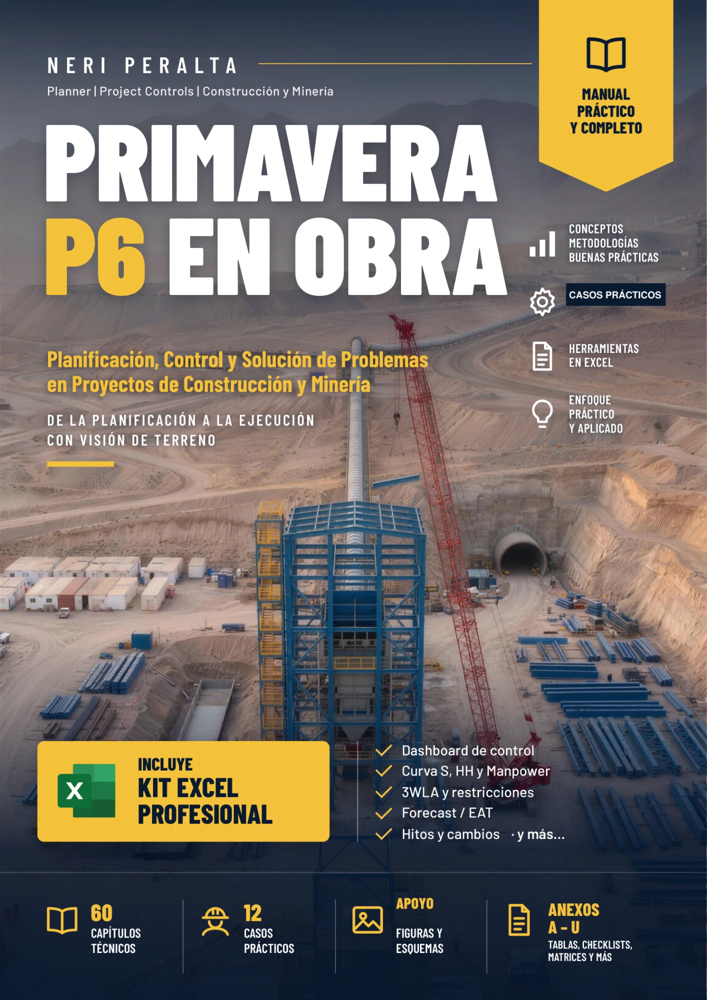
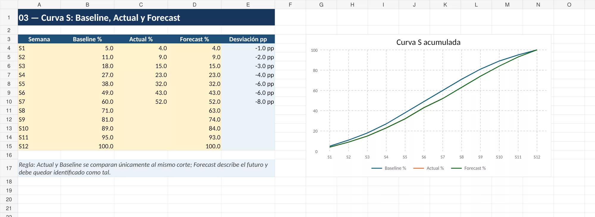

GUÍA 01 · CURVA S
Avance al 52 % no significa ir al día
Cómo separar avance físico real de horas hombre quemadas y leer una Curva S antes de que la brecha se vuelva irrecuperable.
Control de avance
Leer guía
CONSTRUCCIÓN Y MINERÍA · EDICIÓN EN ESPAÑOL
Un cronograma prolijo no prueba que la faena esté bajo control. Parte gratis con Ruta Cero, consulta las Guías Técnicas o domina el método completo con el libro de 340 páginas y el Kit Excel v5.

Cuando en terreno una actividad parte fuera de secuencia, Primavera P6 te obliga a elegir una regla de cálculo. Si dejas Progress Override activo, la barra se solapa en pantalla y te maquilla la fecha de entrega. Con Retained Logic aparece el atraso real antes de entrar al comité.
Cuatro problemas que rompen cronogramas cada semana en construcción y minería, explicados con ejemplos numéricos verificables.
Cómo separar avance físico real de horas hombre quemadas y leer una Curva S antes de que la brecha se vuelva irrecuperable.
La regla de la Data Date: antes del corte solo entran hechos respaldados por terreno; la línea base nunca se mueve para esconder atrasos.
Por qué el dato decisivo no es cuánto gastaste esta semana, sino con cuánto vas a terminar: proyección EAC = Actual + Remaining.
Bajar duraciones a mano mueve la barra en pantalla pero no crea cuadrillas. Cómo sustentar cada día recuperado en comité técnico.
Antes de pasar a auditoría avanzada, arma tu primer proyecto limpio con la guía gratuita Ruta Cero.
IR A RUTA CEROGUÍA DE INICIACIÓN · DESCARGA GRATUITA
Ruta Cero recorre paso a paso desde crear el proyecto P6-RUTA0 hasta guardar la línea base, fijar la Data Date y explicar por qué se corrió la entrega, sin relleno teórico desconectado de la faena.
PDF digital gratuito de 21 páginas. Basado en Primavera P6 Professional v22. No incluye licencia de P6 ni clases en vivo. Material independiente sin afiliación con Oracle.
Para el profesional que necesita defender su programa en comité técnico, auditar ruta crítica, proyectar horas hombre y entregar reportes limpios sin empezar cada planilla desde cero.

EDICIÓN 2.1 · DESCARGA DIGITAL INMEDIATA EN HOTMART
Incluye los 2 archivos completos de pago único: el libro digital en PDF (340 páginas, 19 MB, con Ruta Cero integrada y 21 anexos técnicos A a U) más el Kit Excel v5 editable (13 hojas listas para su oficina técnica).